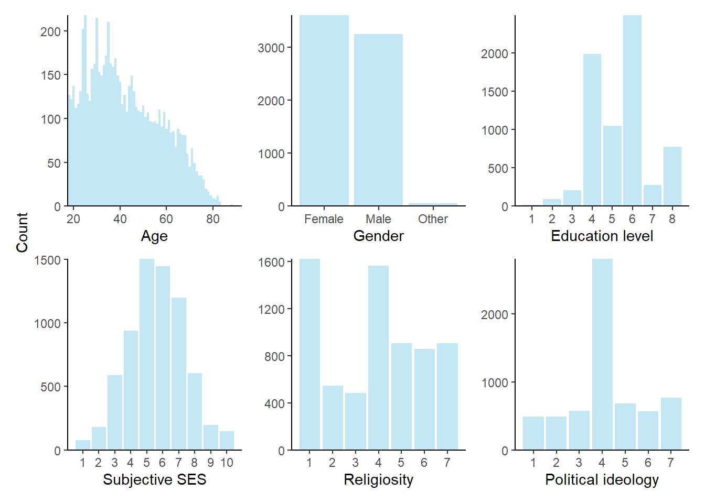
Trust in Artificial Moral Advisors across Cultures
Analysis Summary
This document summarises the analyses so far for the project on trust in artificial moral advisors across cultures. Data collection for this project finished on May 3, 2025.
Data and analysis code are available here: https://github.com/ScottClaessens/trustAMAs
Sample information
After exclusions, we have 6896 participants in our dataset. Here are the sample characteristics, overall and split by country:
| Country | Overall N | Female | Male | Age | Education (1-8) | SES (1-10) |
|---|---|---|---|---|---|---|
| Brazil | 678 | 388 (57%) | 284 (42%) | 39.2 (13.8) | 5.7 (1.6) | 5.9 (1.8) |
| Chile | 563 | 307 (55%) | 255 (45%) | 40.9 (14.9) | 5.4 (1.0) | 5.5 (1.4) |
| China | 501 | 215 (43%) | 282 (56%) | 35.4 (10.8) | 5.9 (1.0) | 5.4 (1.8) |
| France | 585 | 325 (56%) | 256 (44%) | 49.1 (16.9) | 5.0 (1.4) | 5.2 (1.6) |
| Germany | 532 | 284 (53%) | 245 (46%) | 47.6 (17.2) | 4.6 (1.4) | 5.3 (1.7) |
| India | 558 | 259 (46%) | 293 (53%) | 36.8 (13.2) | 6.2 (1.1) | 6.8 (1.7) |
| Mexico | 576 | 321 (56%) | 253 (44%) | 38.8 (13.5) | 5.4 (1.1) | 5.8 (1.6) |
| Poland | 610 | 334 (55%) | 275 (45%) | 45.0 (16.5) | 5.3 (1.8) | 5.4 (1.5) |
| South Africa | 593 | 306 (52%) | 276 (47%) | 39.2 (14.4) | 5.0 (1.1) | 5.3 (1.8) |
| Turkey | 600 | 282 (47%) | 313 (52%) | 38.1 (13.0) | 5.5 (1.2) | 5.9 (1.7) |
| UK | 524 | 277 (53%) | 242 (46%) | 48.3 (17.8) | 5.2 (1.4) | 5.1 (1.8) |
| USA | 576 | 305 (53%) | 269 (47%) | 49.4 (16.2) | 5.3 (1.6) | 5.5 (2.3) |
The sample is close to our age and gender quotas for most countries.
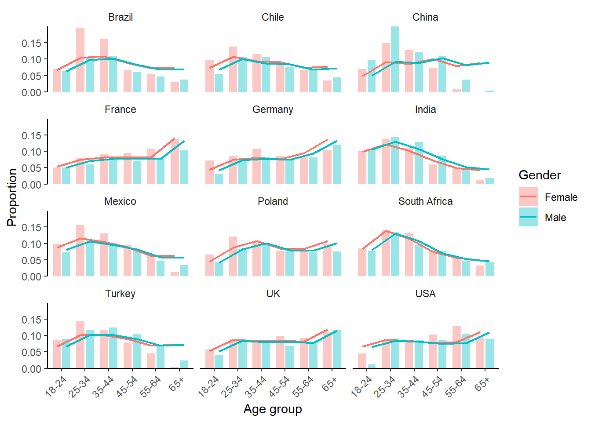
Analyses: Perceptions of the advisors
Overall
Replicating the findings from Myers and Everett (2025), we find that:
- utilitarian advisors are perceived as less trustworthy than deontological advisors (main effect of advisor judgement)
- AI advisors are perceived as less trustworthy than human advisors (main effect of advisor type)
- there is no interaction between advisor judgement and advisor type for trustworthiness
- people are blamed more for following utilitarian advice (vs. deontological advice) and advice from an AI (vs. a human)
- people are more surprised when the deontological advisor is an AI
In addition, we also show that:
- utilitarian advisors are perceived as less human-like (more machine-like)
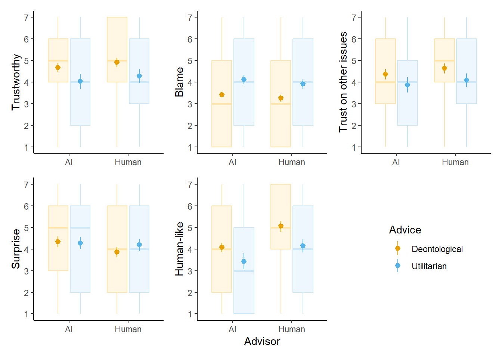
Perceptions |
|||||
|---|---|---|---|---|---|
| Contrast | Trustworthy | Blame | Trust other issues | Surprise | Human-like |
| Effect of advice type | |||||
| AI Utilitarian vs. AI Deontological | -0.59 [-0.92, -0.26] | 0.62 [0.42, 0.81] | -0.50 [-0.80, -0.17] | -0.05 [-0.21, 0.11] | -0.61 [-0.89, -0.32] |
| Human Utilitarian vs. Human Deontological | -0.60 [-0.92, -0.27] | 0.58 [0.37, 0.78] | -0.58 [-0.88, -0.24] | 0.28 [0.08, 0.47] | -0.90 [-1.18, -0.61] |
| Effect of advisor | |||||
| Human Deontological vs. AI Deontological | 0.22 [0.10, 0.35] | -0.14 [-0.26, -0.01] | 0.29 [0.14, 0.44] | -0.40 [-0.53, -0.28] | 0.98 [0.69, 1.24] |
| Human Utilitarian vs. AI Utilitarian | 0.22 [0.09, 0.35] | -0.18 [-0.31, -0.05] | 0.21 [0.06, 0.37] | -0.06 [-0.23, 0.09] | 0.69 [0.40, 0.95] |
| Interaction effect | |||||
| Interaction effect | 0.00 [-0.14, 0.14] | -0.04 [-0.19, 0.10] | -0.07 [-0.21, 0.07] | 0.34 [0.17, 0.52] | -0.29 [-0.43, -0.15] |
Split by country
These results are relatively robust across countries. For example, here are the model coefficients for trustworthiness, overall and split by country:
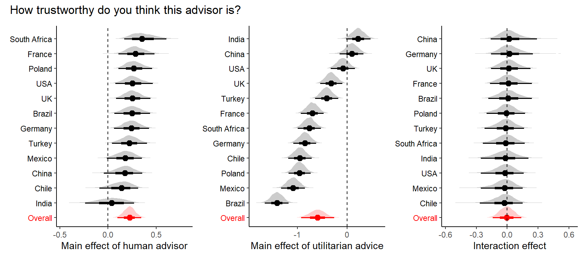
And here are the distributions and model-estimated means for trustworthiness, split by country:
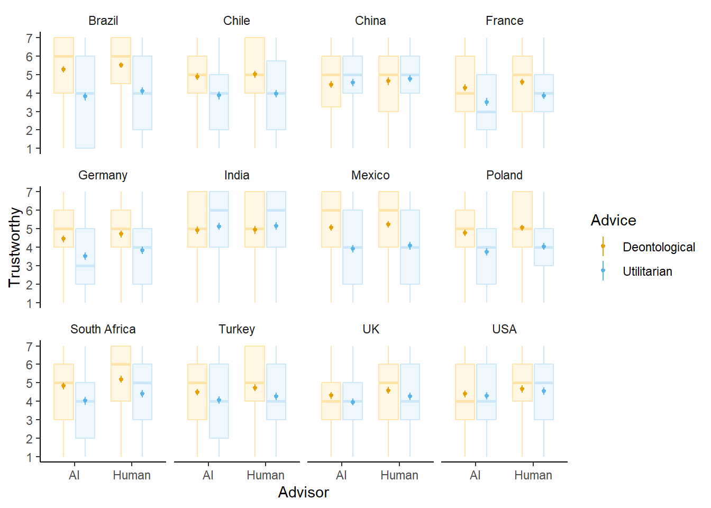
We find similar patterns for the other response variables.
Split by dilemma
Model comparison revealed that additionally splitting by moral dilemma improves model fit. Indeed, it appears that the general patterns tend to be stronger for the baby dilemma compared to the bike dilemma:
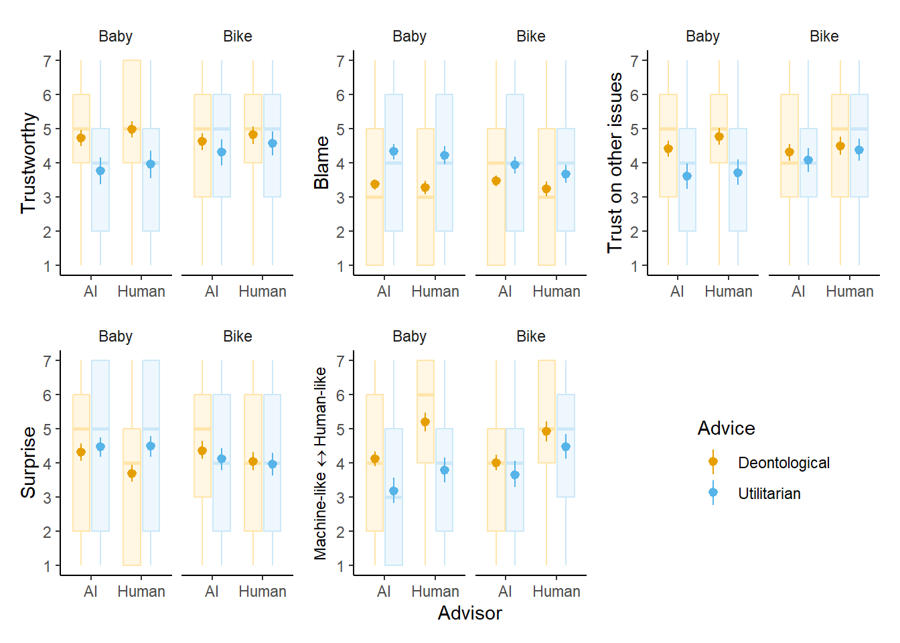
Controlling for agreement
It is important to ensure that differences in perceptions of trustworthiness are not being driven by people simply being more likely to agree with deontological advice. To test this, we analysed how the experimental effects varied across different levels of agreement with the advisor.
We calculated agreement from participants’ initial judgements of the moral dilemma on a 0-1 sliding scale. When agreement = 0, the participant’s initial judgement was maximally different from the advice that they went on to see (e.g., they made a completely utilitarian judgement and then saw deontological advice). When agreement = 1, the participant’s initial judgement was perfectly in line with the advice that they went on to see (e.g., they made a completely deontological judgement and then saw deontological advice).
We find that participants trust the deontological advisor more than the utilitarian advisor when they disagree with the advisor (agreement = 0) and when they are neutral (agreement = 0.5). However, when they agree with the advisor (agreement = 1), the 95% credible interval for the effect includes zero.
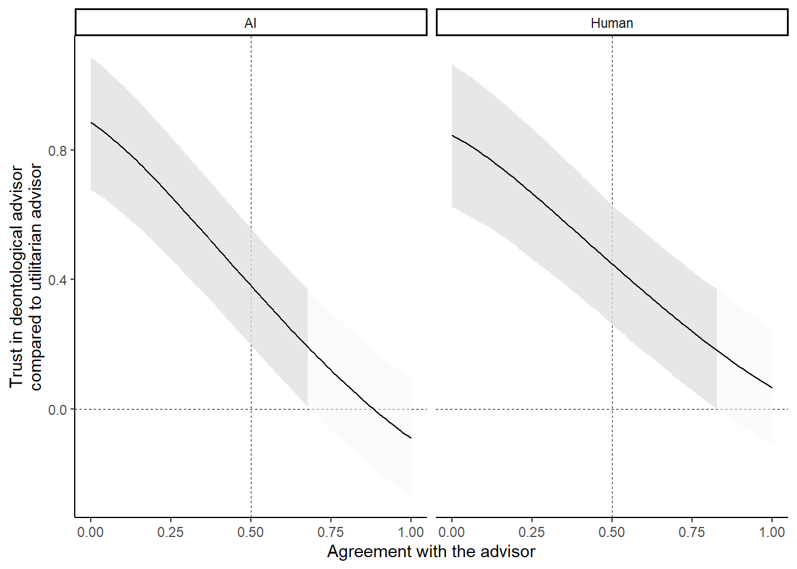
Analyses: Judgements for the moral dilemmas
Overall and by country
Given that participants trust artificial moral advisors less than human advisors, we might predict that they should also be less likely to follow AI advice. To test this, we looked at participants’ judgements of the moral dilemmas (0-1 sliding scale) before and after seeing the advice. Do participants update their judgements in line with AI/human advice?
Yes. After seeing advice from either an AI or a human advisor, participants shift their judgement in the direction of the advice given.
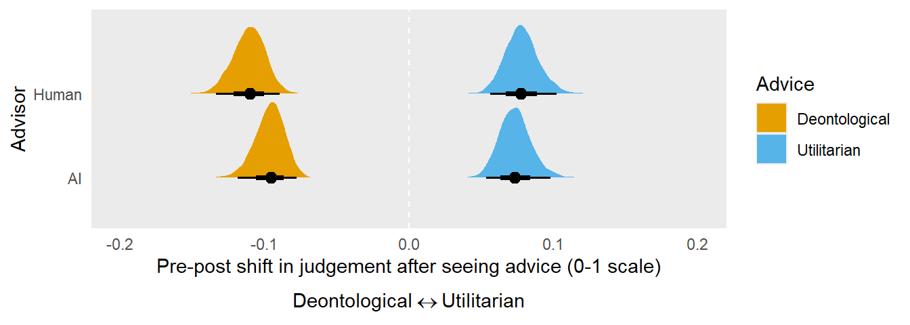
This pattern is robust across countries.
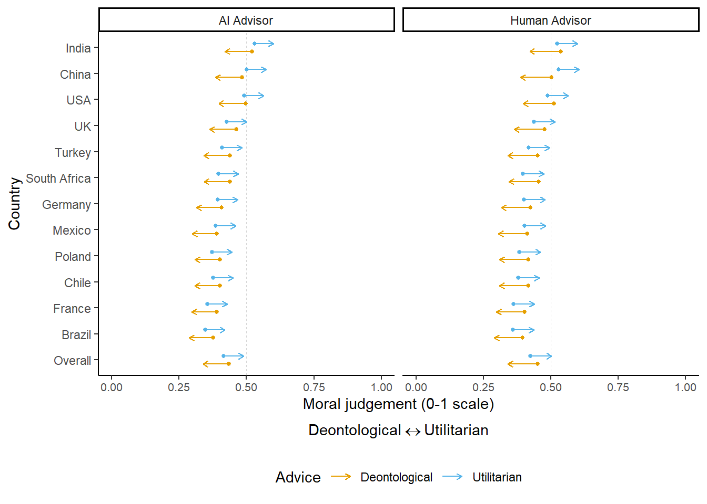
Participants also become more confident when they revise their judgement after seeing the advice, regardless of the direction of the advice and whether it was from a human or an AI.
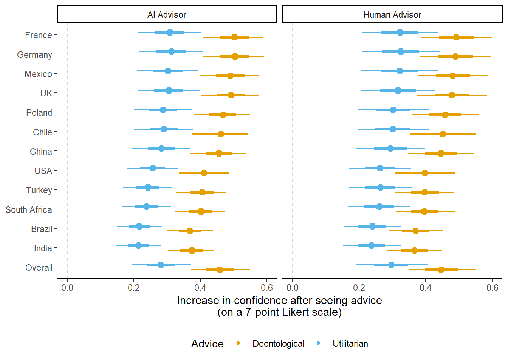
Split by dilemma
Even when splitting by dilemma, we find that participants update their judgement in the direction of the advice, regardless of whether the advisor was AI or human.
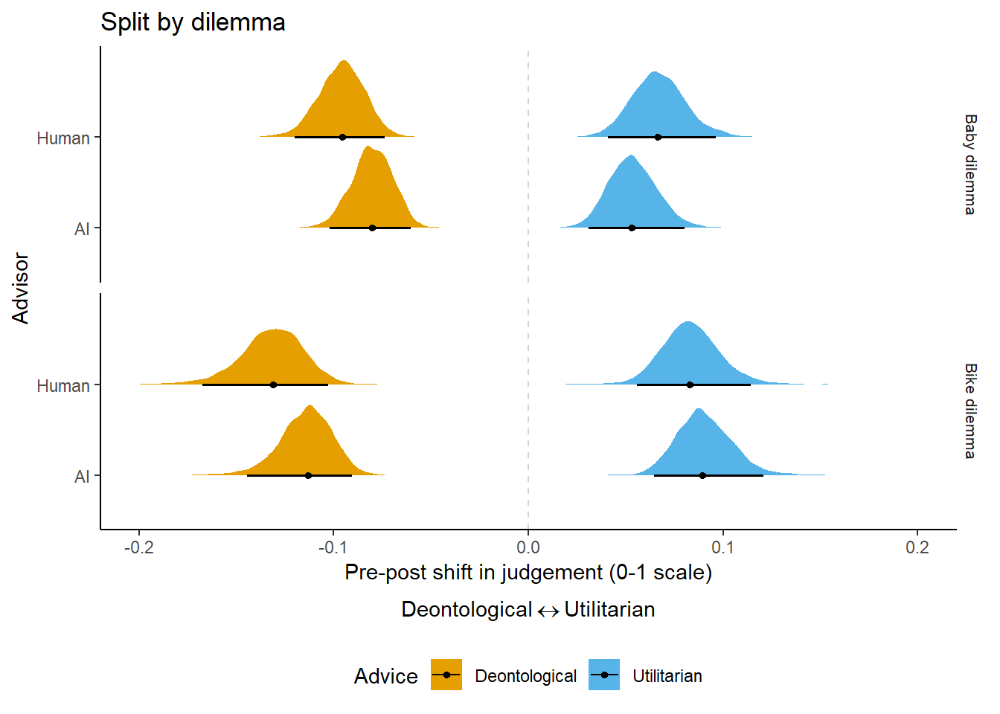
Conclusions
People across cultures appear to trust artificial moral advisors less than human advisors, especially when they give utilitarian advice. They also blame people more for following AI moral advice. Nonetheless, we find that people seem to listen to moral advice from AI: across cultures, participants updated their judgement of the moral dilemma in the direction of the advice that they saw, regardless of whether the advice was from an AI or a human.
Future analyses
We plan to:
- test for any order effects in the data
- test whether the results hold when retaining participants who fail comprehension checks
- test whether the experimental effects vary by demographic characteristics, AI familiarity and usage, and cultural variables